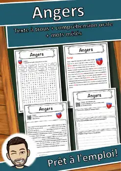
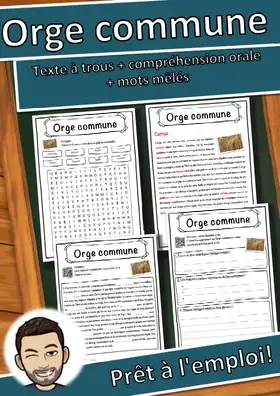
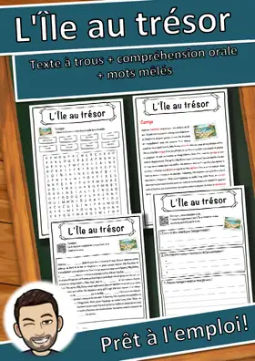
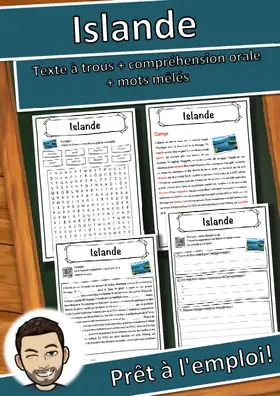
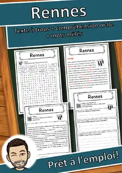
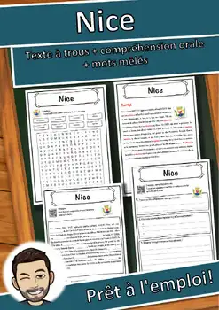
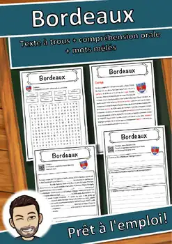
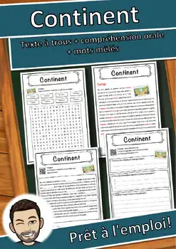
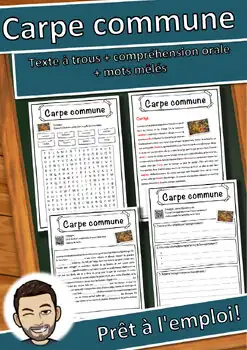

Géographie
135 fiches en français sur le thème « Géographie », prêtes à imprimer et avec corrigé.
135 ressources
Niveau

Île – Fiche : texte à trous, compréhension orale et mots mêlés

Créteil – Fiche de géographie : texte à trous, compréhension orale et mots mêlés

Asnières-sur-Seine – Fiche : texte à trous, compréhension orale et mots mêlés

Saint-Paul – Fiche : texte à trous, compréhension orale et mots mêlés

Grenoble – Fiche : texte à trous, compréhension orale et mots mêlés

Argenteuil – Fiche : texte à trous, compréhension orale et mots mêlés

Ville fantôme – Compréhension de lecture : texte à trous, écoute et mots mêlés

Tours – Fiche de géographie : texte à trous, compréhension orale et mots mêlés

Limoges – Fiche de géographie : texte à trous, compréhension orale et mots mêlés

Le Mans – Fiche de géographie : texte à trous, compréhension orale et mots mêlés

Caen – Fiche de géographie : texte à trous, compréhension orale et mots mêlés

Boulogne-Billancourt – Fiche : texte à trous, compréhension orale et mots mêlés

Annecy – Fiche de géographie : texte à trous, compréhension orale et mots mêlés

Amiens – Fiche de géographie : texte à trous, compréhension orale et mots mêlés

Angers – Fiche de géographie : texte à trous, compréhension orale et mots mêlés

Village – Fiche : texte à trous, compréhension orale et mots mêlés

Orge commune – Fiche : texte à trous, compréhension orale et mots mêlés
Océan Atlantique – Fiche : texte à trous, compréhension orale et mots mêlés

L'Île au trésor – Fiche : texte à trous, compréhension orale et mots mêlés

Islande – Fiche : texte à trous, compréhension orale et mots mêlés

Rennes – Fiche de géographie : texte à trous, compréhension orale et mots mêlés

Nice – Fiche de géographie : texte à trous, compréhension orale et mots mêlés
Nantes – Fiche de géographie : texte à trous, compréhension orale et mots mêlés

Bordeaux – Fiche : texte à trous, compréhension orale et mots mêlés

Continent – Compréhension de lecture : texte à trous, écoute et mots mêlés

Carpe commune – Compréhension de lecture : texte à trous, écoute et mots mêlés
Capitale européenne de la culture – Fiche : texte à trous, compréhension orale et mots mêlés
Capitale européenne de la culture – Lecture, écoute et mots mêlés (FLS/FLE)

Arrondissement de Gütersloh – Fiche : texte à trous, compréhension orale et mots mêlés

Arrondissement de Neuwied – Fiche : texte à trous, compréhension orale et mots mêlés

Océan Pacifique – Fiche : texte à trous, compréhension orale et mots mêlés

Arrondissement de Siegen-Wittgenstein – Fiche : texte à trous, compréhension orale et mots mêlés

Arrondissement de Göppingen – Fiche : texte à trous, compréhension orale et mots mêlés

Rivière – Fiche : texte à trous, compréhension orale et mots mêlés

Montagnes Rocheuses – Fiche : texte à trous, compréhension orale et mots mêlés

Arrondissement de Stendal – Fiche : texte à trous, compréhension orale et mots mêlés

Lac de Zurich – Fiche : texte à trous, compréhension orale et mots mêlés

Chaîne de montagnes – Fiche : texte à trous, compréhension orale et mots mêlés

Lac Müritz – Fiche : texte à trous, compréhension orale et mots mêlés

Île artificielle – Fiche : texte à trous, compréhension orale et mots mêlés

Capitale – Fiche : texte à trous, compréhension orale et mots mêlés

Lac de Garde – Fiche : texte à trous, compréhension orale et mots mêlés

Pays basque – Fiche : texte à trous, compréhension orale et mots mêlés

Région antarctique – Fiche : texte à trous, compréhension orale et mots mêlés

Arrondissement de Wolfenbüttel – Fiche : texte à trous, compréhension orale et mots mêlés

Arrondissement d'Augsbourg – Fiche : texte à trous, compréhension orale et mots mêlés

Arrondissement de Danube-Ries – Fiche : texte à trous, compréhension orale et mots mêlés

Arrondissement de Freudenstadt – Fiche : texte à trous, compréhension orale et mots mêlés
Aucune ressource trouvée – essaie un autre mot ou un autre filtre.